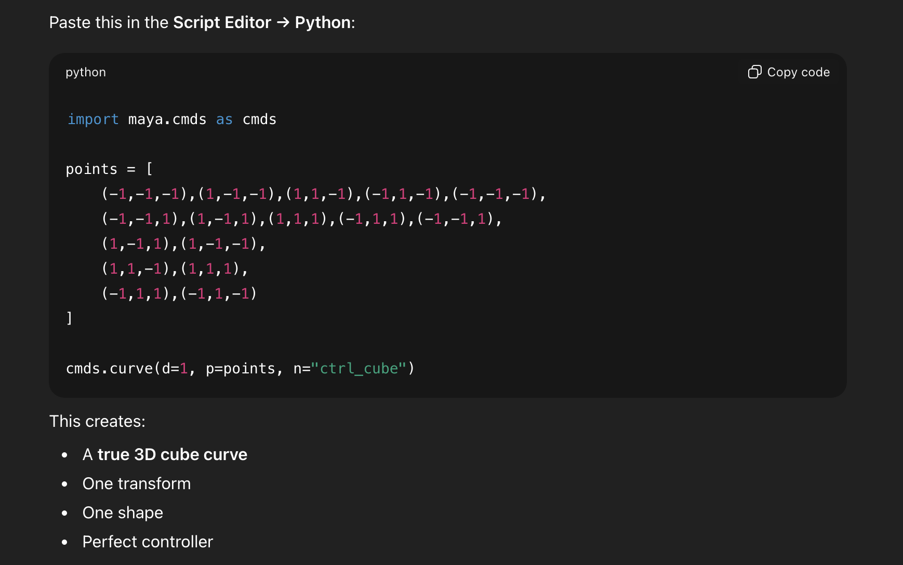
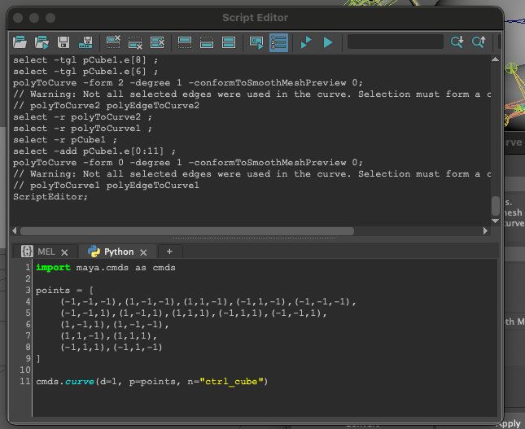
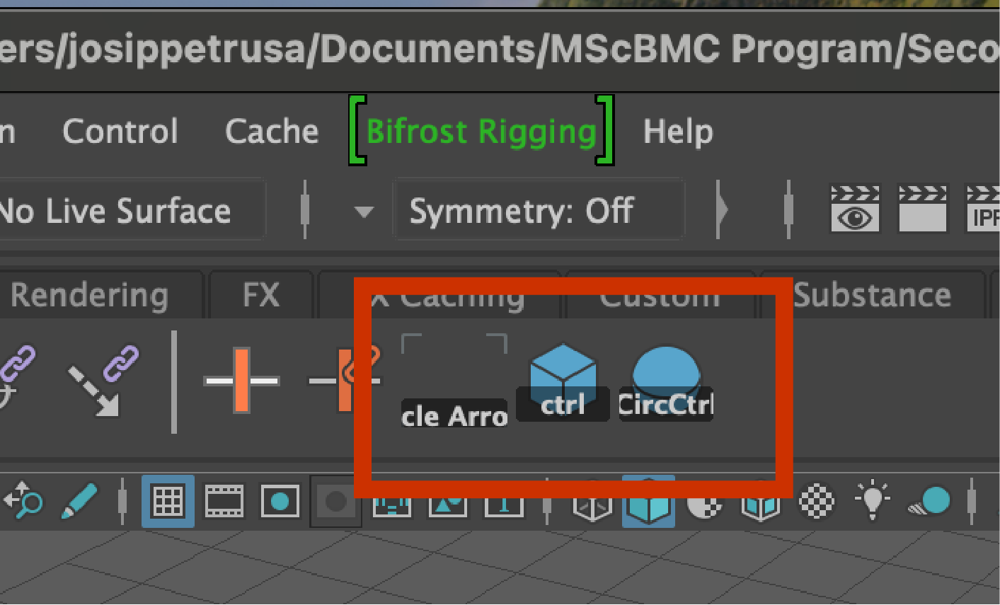

Tech Experiment
4/February/2026
Maya Tech Experiment
Gen AI for Script Editing in Maya
In this tech experiment, I explored the use of generative AI to help me develop python script that would help me automate repetative tasks in Maya. The key tools I used in this experiment were:
- ChatGPT - used to generate python code
- Maya Script Editor - used to run and test the generated python code, and add custom buttons to my Maya shelf.
Experimental Context and Explanation
In this lab, I used gen AI to generate python scripts for Maya. This came about organically while working on a test rig for my MRP. In my MRP animation, I will have a rigged spider character that leads viewers through a story. When building this rig, I noticed that I had to draw custom controllers using curves in Maya. After drawing these controls once each, I grew frustrated, as this was a very time consuming process that seemed extremely inefficient. I decided to ask chatGPT if there was a way to automate this process, and it suggested generating python scripts for each of the controller shapes I drew, and then creating custom buttons on my Maya shelf that would allow me to access these at any time. I decided to go for this, and used chat GPT to generate the sript, then the maya script editor to run it and add custom buttons to my self. The project screnshots below show each of these three stages.
Project Screenshots




Experiment Reflection
Overall, this experiment was a great success. I was able to automate a repetitive task in Maya using ChatGPT's assistance. The generated Python scripts saved me a lot of time and effort, and the custom buttons on my Maya shelf made it easy to access these controllers quickly. This was not completley without it's challenges, as when things wouldnt work I did not really understand why since I did not understand the code fully. However, this experience showed me how powerful AI can be in helping automate repetative creative tasks like animation rigging. I will use this type of automation to help speed up future projects.